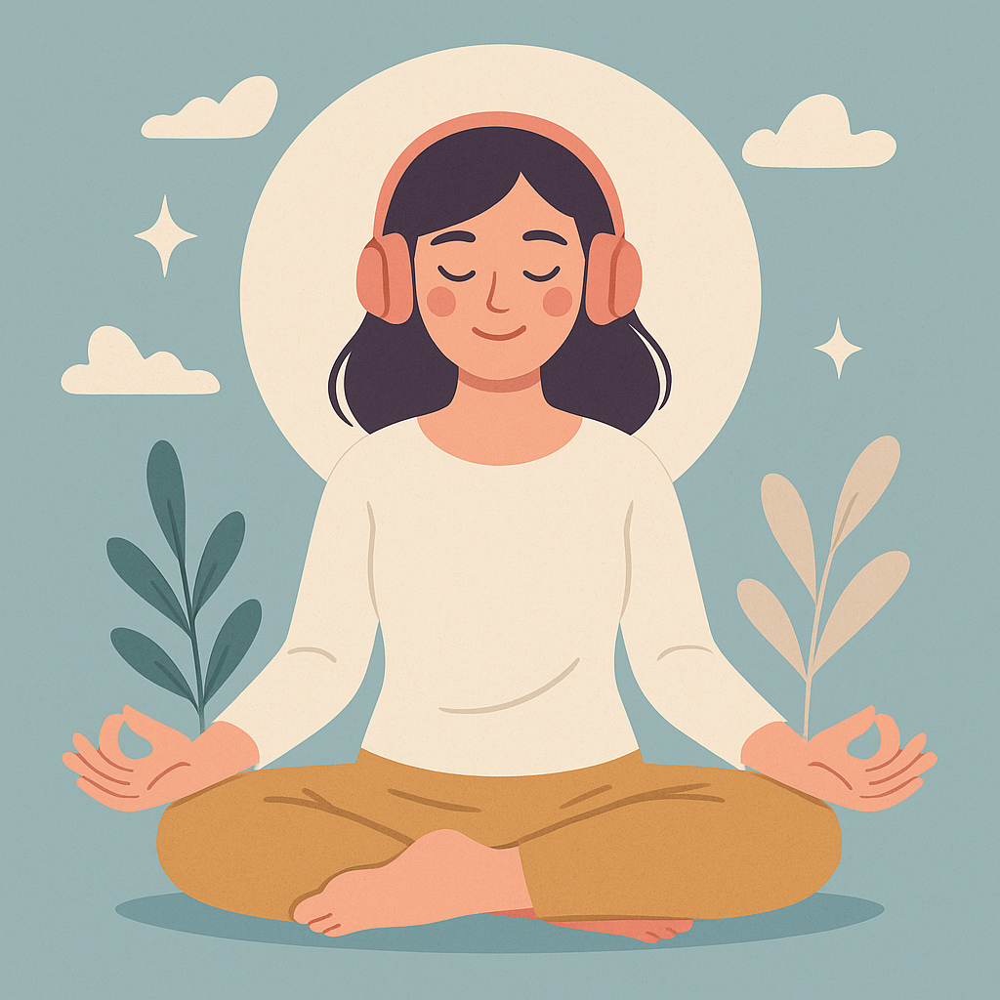
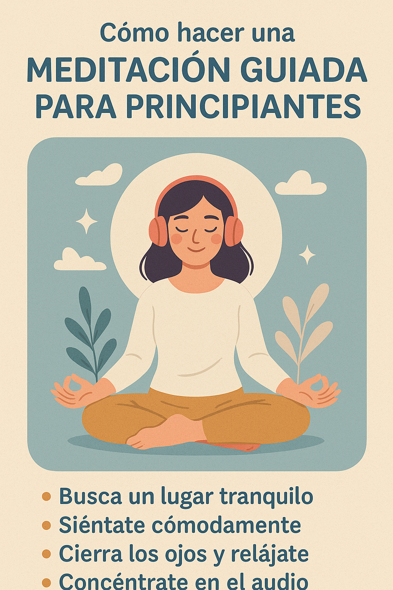

Meditación guiada para principiantes: paso a paso para calmar la mente
Introducción: Por qué la meditación guiada es ideal para principiantes
Si quieres empezar a meditar sin complicarte, una meditación guiada para principiantes es la mejor opción. No necesitas experiencia ni posturas difíciles. Solo siéntate cómodo, respira y sigue una voz tranquila que te guíe.
Beneficios de la meditación guiada para principiantes
La meditación guiada reduce ansiedad, mejora la calidad del sueño y ayuda a centrar la mente. Es perfecta para complementar tu Mindfulness Diario, tu Guía de Respiración o una Rutina de 5 Minutos para Reducir Ansiedad.
Cómo empezar una meditación guiada paso a paso
1️⃣ Encuentra tu espacio tranquilo
Busca un lugar silencioso. Tu rincón de paz en casa es ideal. Pon el móvil en silencio y crea un ambiente relajante.
2️⃣ Elige la duración ideal para empezar
Comienza con 5 o 10 minutos. No necesitas más para sentir los beneficios. A medida que avances, puedes ampliar a 15 o 20 minutos.
3️⃣ Usa una grabación o app confiable
Elige una voz clara y calmada. Puedes probar nuestra Meditación Guiada para principiantes que ya tenemos preparada para ti.
4️⃣ Sigue la respiración y déjate guiar
Respira de forma natural. Si la mente se distrae, vuelve a la voz. No fuerces nada. Solo observa y suelta.
5️⃣ Cierra con una intención positiva
Antes de abrir los ojos, respira profundo y piensa en algo que agradezcas. Así anclas la calma en tu día.
Meditación guiada para principiantes: audio sugerido
Escucha esta meditación guiada de 6 minutos para acompañarte en tu práctica diaria. Solo siéntate cómodo, respira y sigue la voz.
Errores comunes al empezar con meditación guiada
- Esperar resultados inmediatos y rendirse rápido.
- Pensar que la mente debe quedarse en blanco siempre.
- No tener constancia diaria.
Cómo reforzar la meditación con otras prácticas
Si quieres potenciar la calma, complementa con técnicas de respiración (Guía de Respiración), estiramientos suaves con la Guía de Yoga para Principiantes o escribe en un journal para la ansiedad.
Preguntas frecuentes sobre meditación guiada para principiantes
¿Debo sentarme en posición de loto? No. Basta con estar cómodo.
¿Puedo meditar acostado? Sí, aunque podrías dormirte.
¿Cuándo empiezo a notar cambios? Desde la primera semana, si eres constante.
Conclusión: Medita paso a paso y siente la calma
Empieza hoy con una meditación guiada para principiantes y descubre cómo unos minutos de calma pueden transformar tu día.